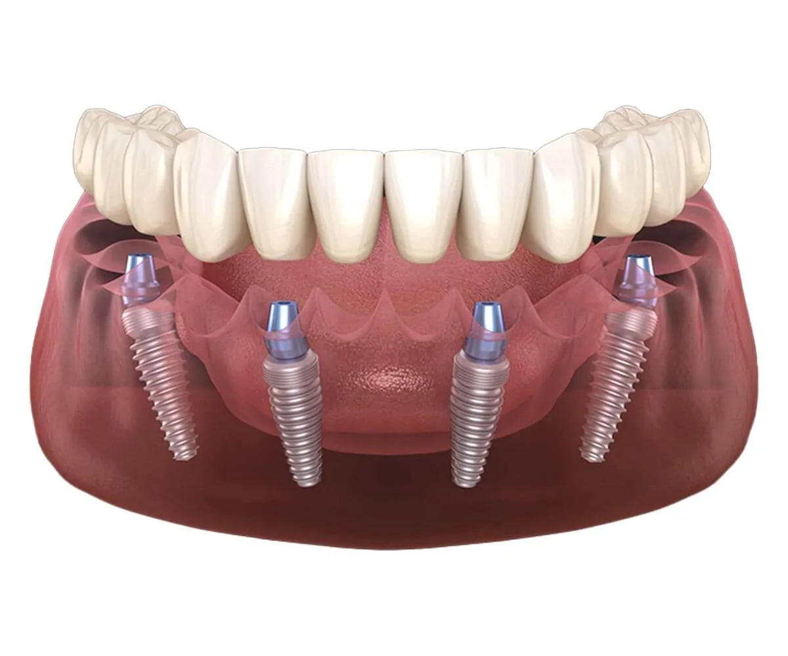

Что такое All-on-4: полное восстановление зубного ряда на четырёх имплантатах
Установка зубных имплантатов All-on-4 — это принципиально новый подход к полному восстановлению зубного ряда. Это инновационное решение включает в себя установку всего четырех зубных имплантатов для фиксации несъемного полнодугового протеза в день операции.
 Анталья · ТурцияAll-on-4Зубные имплантатыимплантата на челюстьнесъёмный мост на всю челюсть
Анталья · ТурцияAll-on-4Зубные имплантатыимплантата на челюстьнесъёмный мост на всю челюстьПочему имплантация All-on-4 так популярна?
Основная причина заключается в том, что они представляют собой менее инвазивную и экономически эффективную альтернативу традиционным методам имплантации зубов. Меньшее количество имплантатов означает меньше хирургического вмешательства и более быстрое время восстановления для пациентов.
Да, зубные имплантаты All-on-4 могут заменить все отсутствующие зубы как на верхней, так и на нижней челюсти. Лечение особенно полезно для пациентов, которые потеряли большую часть или все свои зубы и хотят восстановить полноценную, функциональную улыбку.
Жизнь, изменённая All-on-4: клинические случаи
Потеря зубов влияет не только на улыбку, но и на контуры лица и уверенность в себе. Ниже вы можете увидеть четыре разных примера преображений, которых мы достигли с помощью методики All-on-4 в клинике Akdeniz Dental в Анталье.
Восстановление функции и поддержка черт лица

Проблема: Западание губ и потеря объёма костной ткани.
Решение: Стратегическая установка имплантатов и угол протеза, обеспечивающий поддержку губ.
Результат: Выразительный профиль и омоложенные черты лица.
Анализ случая 1:
Главной задачей в случае этого пациента было восстановить положение губ, которые из-за потери зубов запали внутрь.
Ключевая деталь: не только белизна зубов, но и их длина и угол наклона были рассчитаны с точностью до миллиметра, чтобы поддержать линию губ пациента.
Результат: «постаревшее» лицо, вызванное потерей зубов, сменилось живым и полным профилем.
Эстетическая архитектура и естественная гармония

Проблема: Деформация собственных зубов и неровный контур десны.
Решение: Цифровое планирование для оптимальной «розовой» эстетики и выбора материалов.
Результат: Гладкая, отражающая свет и биосовместимая улыбка.
Анализ случая 2:
Во втором случае нашей целью было устранить проблему деформированных собственных зубов и полностью стабилизировать зубную дугу.
Ключевая деталь: чтобы избежать впечатления «искусственных зубов», естественные изгибы десны («розовая» эстетика) были совмещены с прозрачностью керамики.
Результат: удалось создать дизайн улыбки, одновременно естественный и статусный, идеально подходящий к чертам лица пациента.
Геометрическая точность и идеальная окклюзия

Проблема: Выраженное нарушение прикуса и неправильное смыкание зубов.
Решение: Точное позиционирование имплантатов для исправления сложных нарушений положения зубов.
Результат: Безупречная геометрия зубного ряда и функциональный комфорт.
Анализ случая 3:
В третьем случае, в отличие от остальных, мы столкнулись не со значительной потерей кости, а с выраженной скученностью и деформацией зубов. На фото «до» выше видна неровная структура: зубы заходят друг на друга, окклюзия нарушена, а гигиена стала невозможной. Адаптировав методику All-on-4 к этому случаю, мы поставили главной целью добиться безупречной «геометрической выверенности» и «функциональной окклюзии».
Ключевая деталь: искривлённые собственные зубы не позволяли установить имплантаты под идеальными углами. Благодаря цифровому планированию положение имплантатов было подобрано так, что фиксированный на них керамический мост полностью решил эту сложную геометрию.
Результат: как видно на фото ниже, форма, размер и соотношение каждого зуба с соседним были спроектированы с математической точностью. Это восстановило не только эстетику, но и идеальную окклюзию (прикус), необходимую пациенту для правильного жевания.
Реабилитация на имплантатах All-on-4 в Анталье

Проблема: Снижение высоты прикуса, отсутствие нескольких передних зубов и выраженное нарушение структуры, повлиявшее на высоту лица.
Решение: Имплантаты All-on-4 с индивидуально изготовленными коронками и мостами для восстановления прикуса, вертикальной высоты и естественной симметрии улыбки.
Результат: Полностью омоложенные черты лица, сбалансированная поддержка губ и уверенная, молодая улыбка.
Анализ случая 4:
Пациент обратился к нам с генерализованной стираемостью зубов, отсутствием нескольких боковых и передних зубов и выраженным изменением их цвета. Это привело к значительному снижению высоты прикуса, западанию нижней трети лица (что создавало постаревший профиль) и асимметричной линии улыбки, которой пациент стеснялся.
Главной задачей было не поверхностное косметическое изменение, а комплексная реабилитация всей полости рта. Работа началась со стабилизации прикуса и восстановления правильной окклюзии. На основе детального эстетического и функционального анализа были применены современные методы восстановления, чтобы не просто заменить отсутствующие зубы, но и восстановить вертикальную высоту. Цвет и текстура новых реставраций были тщательно подобраны, чтобы они выглядели одновременно ярко и естественно.
Ключевая деталь: положение и наклон каждой коронки были рассчитаны с высокой точностью. Также было уделено внимание здоровью десны, чтобы обеспечить плавный и здоровый переход между реставрациями и сохранёнными собственными зубами. Общий дизайн гармонирует с чертами лица пациента и создаёт симметричное обрамление улыбки.
Результат: глубокое преображение заметно во всём лице. «Постаревший» профиль ушёл, уступив место живому, сбалансированному и омоложенному облику. Благодаря восстановлению естественной вертикальной опоры верхняя и нижняя губы заняли правильное положение, а мимические морщины разгладились. Пациент заново открыл для себя свою улыбку и излучает молодую, здоровую и уверенную энергию.
Почему случаи разные, а результат одинаковый?
Методика All-on-4 подбирается индивидуально. Как видно на четырёх примерах выше:
в одном случае приоритетом было восстановление объёма лица и поддержки губ,
в другом — естественное эстетичное выравнивание и гармония десны,
в последнем случае мы превратили крайне сложную структуру в безупречную геометрию зубного ряда.
Что объединяет все эти процедуры:
Стабильный успех: надёжное решение для любой сложной структуры зубов и челюсти.
Быстрый комфорт: имплантаты и временные несъёмные зубы за одно посещение.
Биологическая сохранность: конструкция, которая поддерживает жизнеспособность кости и сохраняет высоту прикуса.
С чего начнётся ваша история? Запишитесь на бесплатную КТ и консультацию.